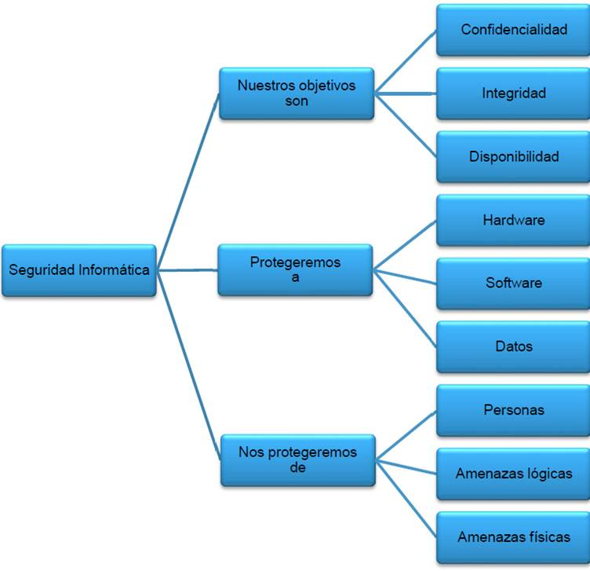

Protocolos e instrucciones
Desde nuestra empresa montamos salas de situación u observatorio para ámbitos públicos como privado, con el objeto de detectar las posibles amenazas y vulnerabilidades y combatir las mismas. Así mismo armamos planes de contingencia y mitigación en caso de ciber ataques o sustracción de la información.
Entrenamiento del personal
El equipo humano que trabaja dentro del centro de monitoreo de seguridad es una pieza clave en el engranaje. A su vez, es uno de los recursos más costosos dentro del sistema.
Esto hace que la definición de planes de capacitación y entrenamiento para el personal de operación de monitoreo deba ser una prioridad.
Al momento de la puesta en marcha del Sala de Situación o Centro de monitoreo en materia de Ciber seguridad es cuando se implementa la mayor cantidad de horas de capacitación. Ante ello hay que darle al personal herramientas que les permitan mejorar sus habilidades en el trabajo, el entrenamiento, tanto teórico como práctico, debe ser continuo.
Evaluación y mejora continua
En la misma línea de lo que te sugerimos sobre la capacitación, la política de revisión de los procesos, procedimientos e instructivos de actuación, debe definirse desde el inicio del proyecto. El objetivo de estas prácticas de calidad es asegurar que la organización disponga de información relevante, confiable y actualizada acerca del sistema de seguridad, y le permita tomar decisiones acertadas.
Para permitir que el centro de monitoreo de seguridad cumpla su función y sea útil a los propósitos de cada organización, es importante que ya desde la etapa de planificación se definan los indicadores claves de gestión de la seguridad, los métodos de revisión del sistema que se van a llevar adelante y que se asignen los responsables.
Se utilizará El ciclo de Deming (de Edwards Deming) quien es distinguido de manera exitosa por su difusión y afianzamiento a nivel mundial del ciclo Deming y convirtiéndose así en uno de lo ponentes de gran importancia en el tema de la calidad, el ciclo de Deming también conocido como ciclo PDCA (del inglés Plan-Do-Check-Act) o PDSA (del inglés Plan-Do-Study-Act) o PHVA (de la traducción oficial al español como Planificar-Hacer-Verificar-Actuar) o espiral de mejora continua, es un método sistemático para la resolución de problemas con el fin de generar una mejora continua de la calidad, en cuatro pasos.
Mantenimiento
En la Sala de Situación o Centro de monitoreo en materia de Ciber seguridad es donde las medidas de por eso debemos contar con un plan de mantenimiento que contemple a todos los componentes y defina la asistencia necesaria para asegurar un óptimo funcionamiento las 24 horas, los 365 días del año.
La Sala de Situación en materia de Ciberseguridad que montamos es totalmente adaptable a cada empresa, urbanización u organización. La clave es diseñar la solución óptima para cada caso de la mano de profesionales experimentados.
Según la materia de análisis, las auditorias pueden ser de revisión de la documentación, pasando por el funcionamiento del sistema, los servicios que lo soportan (ambientes Web o aplicaciones móviles), para finalmente adentrarse en los lenguajes de programación y código fuente.
La mayoría de los ataques informáticos no son detectados hasta que, por fuentes externas la organización, la víctima se entera que la información sensible contenida en su infraestructura ha sido publicada por hackers, está siendo subastada en el mercado negro o el ataque cifra o destruye la información de los medios de almacenamiento.
En este caso se puede realizar lo que se conoce como una auditoria “Post mortem” o análisis forense digital, cuya finalidad es explicar qué fue lo que sucedió, cuando sucedió y quién lo llevó a cabo. Esta auditoria analiza el rastro dejado por los atacantes y toda la información de la que el investigador forense disponga para la reconstrucción de los hechos.
Desde nuestra empresa
Llevamos a cabo auditorías de seguridad informática o auditoría de seguridad de sistemas de información la cual comprende el análisis y gestión de sistemas llevado a cabo por profesionales para identificar, enumerar y posteriormente describir las diversas vulnerabilidades que pudieran presentarse en una revisión exhaustiva de las estaciones de trabajo, redes de comunicaciones o servidores.
Una vez obtenidos los resultados, se detallan, archivan y reportan a los responsables quienes deberán establecer medidas preventivas de refuerzo y/o corrección siguiendo siempre un proceso secuencial que permita a los administradores mejorar la seguridad de sus sistemas aprendiendo de los errores cometidos con anterioridad.
Las auditorías de seguridad de permiten conocer en el momento de su realización cuál es la situación exacta de sus activos de información en cuanto a protección, control y medidas de seguridad.
Según la materia de análisis, las auditorias pueden ser de revisión de la documentación, pasando por el funcionamiento del sistema, los servicios que lo soportan (ambientes Web o aplicaciones móviles), para finalmente adentrarse en los lenguajes de programación y código fuente./p>
La mayoría de los ataques informáticos no son detectados hasta que, por fuentes externas la organización, la víctima se entera que la información sensible contenida en su infraestructura ha sido publicada por hackers, está siendo subastada en el mercado negro o el ataque cifra o destruye la información de los medios de almacenamiento.
En este caso se puede realizar lo que se conoce como una auditoria “Post mortem” o análisis forense digital, cuya finalidad es explicar qué fue lo que sucedió, cuando sucedió y quién lo llevó a cabo. Esta auditoria analiza el rastro dejado por los atacantes y toda la información de la que el investigador forense disponga para la reconstrucción de los hechos.
Capacitación para todos los niveles
Desde cero, básico, intermedio y avanzado. Somos especialistas en ciberseguridad.
El objetivo es que los participantes logren:
- Comprender conceptos básicos de ciberseguridad.
- Adquirir una visión actualizada de la legislación vigente de los delitos informáticos y de las normas actuales en materia de ciberseguridad del Sector Público Nacional.
- Conocer las funciones de la Dirección Nacional de Ciberseguridad y del CERT.
- Reconocer el rol de las mujeres en el campo de la ciberseguridad.
- Distinguir acciones y conductas violentas perpetradas en Internet contra la mujer.
- Prevenir los principales delitos informáticos que se cometen contra los niños, niñas y adolescentes en entornos virtuales.
- Comprender nociones introductorias de la investigación criminal de los delitos informáticos.
- Identificar la importancia de la protección de los datos personales.
- Prevenir vulnerabilidades e incidentes informáticos.

Nuestra consultoría en Ciberseguridad se encarga de implementar todas las técnicas necesarias, siempre por parte de expertos y especialistas en la materia, para poder ofrecer un mejor rendimiento en el flujo de información a las entidades, así como darles una mayor protección.
Nuestros principales objetivos son:
Revisión
Entre otras cosas, este tipo de consultoría se encarga de aprovechar al máximo todos los métodos que tiene a mano para poder realizar una correcta revisión de los sistemas informáticos de la empresa. De esta manera, puede llevar a cabo una auditoría y análisis mucho más detallados para la posterior implementación de las soluciones más adecuadas.
Control
También se encargan de llevar un exhaustivo control de los sistemas, que es el siguiente paso una vez que han sido revisados y analizados por los expertos correspondientes.
Políticas de seguridad
Otro de los objetivos clave de las consultorías es plantear políticas de seguridad que se adecuen a la perfección a las necesidades que presenta cada empresa. Sabiendo esto, se pueden recomendar ciertos sistemas con un mayor grado de protección, para poder alcanzar la óptima disponibilidad, integridad y confidencialidad de los datos.
En base a las políticas de seguridad, también hay que decir que estos profesionales se encargan de visualizar los puntos débiles del sistema y eliminarlos.
Plan de acción
Cuando detectan todas las vulnerabilidades, la consultoría debe elaborar un plan de acción para poner en marcha todas las medidas necesarias para evitar las posibles amenazas informáticas, teniendo en cuenta que se deben controlar y monitorizar de manera constante todos los sistemas que forman parte del desarrollo de la actividad empresarial.
Dispositivos móviles
Además de los ordenadores de la entidad, hay que decir que otras aplicaciones o dispositivos móviles pueden ser la diana perfecta para los ataques informáticos. De ahí que las consultorías también deban proponer medidas de seguridad para estos elementos.
El uso de planes de contingencia se utiliza para prepararse para la recuperación ante desastres o la interrupción económica a fin de evitar a exponernos de riesgos innecesarios.
Realizamos planes de contingencia
Diseñamos planes denominados «Plan B», con el objetivo de prepararse para cualquier riesgo que afecte a su capacidad para funcionar.
La evaluación de los riesgos
Preparamos tu plan de contingencia. El objetivo clave para asegurarte que puedas mantener el funcionamiento de tu organización si ocurriera el desastre. Los objetivos principales son:
- Disponer de una política formal que explique la necesidad de un plan de contingencia es una buena idea.
- El plan debe ser simple en general. El lenguaje y las instrucciones deben ser entendibles para futuras audiencias. Nunca se sabe quién tendrá que implementarlo.
- Localiza el desencadenante concreto que exigirá el uso de tu plan de contingencia. Determina cómo medirás el éxito para poder regresar a las operaciones normales. Identifica todas las operaciones que son críticas para que tu negocio continúe.
Calculamos los riesgos que es más probable que ocurran para tu organización específica mediante la realización una auditoria o Sistenma de Gestión en Seguridad de la información bajo norma ISO 27001 . Uno de los principales aspectos de un plan de contingencia es establecer los potenciales riesgos. Este no será un proceso único para todos. Debes determinar los riesgos que son exclusivos de la organización. Hay muchos riesgos posibles que las empresas pueden enfrentar.
- Los desastres naturales, como inundaciones, huracanes y sequías pueden requerir un plan de contingencia.
- Otros posibles riesgos incluyen una crisis, un accidente en el lugar de trabajo, problemas de personal (como la muerte de un líder o una huelga), pérdida de datos, mala gestión y problemas con el producto (como un retiro del mercado).
- Debes centrarte en áreas que incluyen gestión, comunicaciones, recursos financieros, coordinación, respuestas logísticas y técnicas.
- Los desastres técnicos pueden incluir aquellos componentes de tu organización que se ocupan de la infraestructura de comunicación. Deberás considerar la posible pérdida de datos o clientes.
Priorizar los riesgosClasificamos los riesgos según la probabilidad de que ocurran. No todos los riesgos son iguales, y la mayoría de los planes de contingencia no pueden abordar en profundidad cada riesgo potencial. Debes averiguar cuáles son más probables y afectarían más a la empresa.
- Nos concentramos en los eventos más críticos. Debes enumerar cada evento que pueda afectar las operaciones, pero luego clasificarlos de 1 a 10. ¿Cuál sería el impacto de cada evento? Un incendio pequeño aislado en una máquina probablemente clasificará más bajo que toda la planta en llamas, por ejemplo.
- Luego, desarrollamos una clasificación de la frecuencia con la que puede ocurrir el riesgo. Por ejemplo, podría obtener un puntaje de 10 si pudiera suceder una vez al mes y un 1 si pudiera suceder una vez cada 100 años.
- Luego, se multiplica los dos puntajes, por probabilidad e impacto, para obtener un puntaje total.
- Trabajamos primero en los puntajes más altos. Así mimos se puede mirar los ítems de bajo puntaje y desarrollar un proceso general. Las áreas que son esenciales para la supervivencia de la organización generalmente se colocan en la parte superior, como mantener el flujo de efectivo, la participación en el mercado y el apoyo del personal.
El pentesting está enfocado a la realización de pruebas de penetración de forma ofensiva, atacando a los sistemas de información o a la propia organización, poniendo a prueba la concienciación de los trabajadores, haciendo uso de técnicas de ingeniería social.
Estas pruebas tienen la finalidad de descubrir cualquier tipo de vulnerabilidad que pudiera afectar al entorno y tener las bases que permitan prevenir este tipo de ataques. Este servicio de Pentesting aporta mayor valor que un Análisis de Vulnerabilidades, debido a que se hace un análisis más detallado de las vulnerabilidades que se encuentran durante la auditoria, descartando así falsos positivos.
Cuando hablamos de realizar un “Ethical Hacking” nos referimos a realizar una prueba de penetración que abarca absolutamente TODO. O, dicho de otro modo, no hay un objetivo determinado, todo es explotable y no hay limitación más allá de la pactada con el cliente para la realización de las pruebas, en la que se pueden excluir algún tipo de pruebas.
En un “Ethical Hacking” se simula el comportamiento de un atacante real, con el objetivo de comprometer la organización en su totalidad. Utilizando técnicas propias de bandas cibercriminales organizadas, por lo que este tipo de análisis son los que están más a la vanguardia en cuanto a seguridad ofensiva haciendo uso de vectores de ataques poco conocidos e incluso ideando nuevos vectores de ataque que ponen a prueba las defensas de las mejores organizaciones.